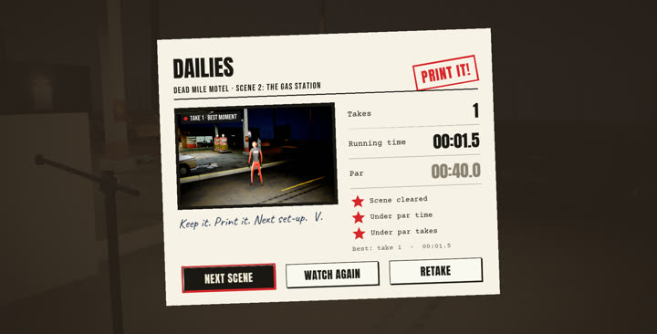
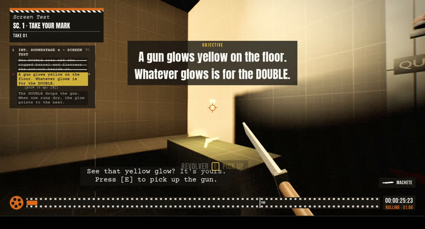
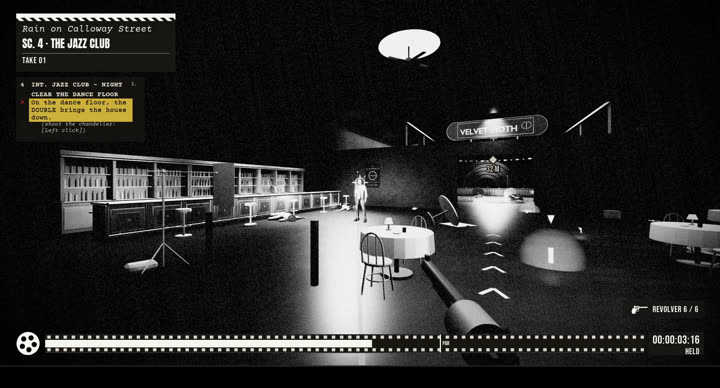

Round two: held Space, a two-hit machete and faster enemies
My 12:10 playtest found that holding Space to skip also pressed the next button, that the machete killed in one hit, and that enemies were slow to react; all four fixes were in a package that passed 25 journey steps at 13:00.
Day 4, Sun 15 NovHour 81
I played 7bc85e179 at noon. The note:
"Few issues in that Playtest, 1 is the the hold space then auto presses the next button that shows up that is also space so what happens if you skip the replay the next scene auto plays. Enemies need to act faster and be snappier when they see you they need to shoot quick, this will make them harder to fight. Machete should never be a 1 hit weapon makes it too powerful. After the credits when holding space it auto put me in the last Noir scene for some reasons and interaction prompts UI don't show in the tutorial for some reason"
Ten minutes later I added "+the alien blaster has too much ammo, half it". That one turned out to be my mistake (next post).
Four tasks, one window:
- T-0215 (gameplay-2): the fix for held Space already existed. It was a key-swallow built in the morning and shelved because it touched C++ late. It went in: a Space still held from a skip is swallowed, so it can't press the next button. On film the credits skip lands on the title and stays there, and the Dailies card waits.
- T-0217 (gameplay-3): one number,
MinHitsToKill 2. A runner went down on the second swing, and so did a shambler.
- T-0216 (npc-ai): quicker reactions, and gunmen shoot sooner after spotting you. Data only.
- T-0218 (gameplay): the [E] PICK UP prompts showed everywhere except the screen test. Fixed there, and ui moved the prompt above the subtitle plate, which it had been sitting on.

After the fix: Space held through the replay, and the Dailies card waits for a fresh press.
The screen test's REVOLVER [E] PICK UP prompt, which wasn't showing at all in the tutorial before T-0218.
A jazz club gunman's aim tell after T-0216. They draw sooner now, and in the next round this tell was made near-white because it didn't read in black and white.
Green at 12:43 on a22ef6dac. Journey 25 of 25 from the zip at 13:00, including "hold Space through replay: dailies waits" and "hold Space through credits: title waits".
One thing the film found that I hadn't: a hold that starts before the HOLD prompt appears doesn't count, so you have to press again. Left as it is.